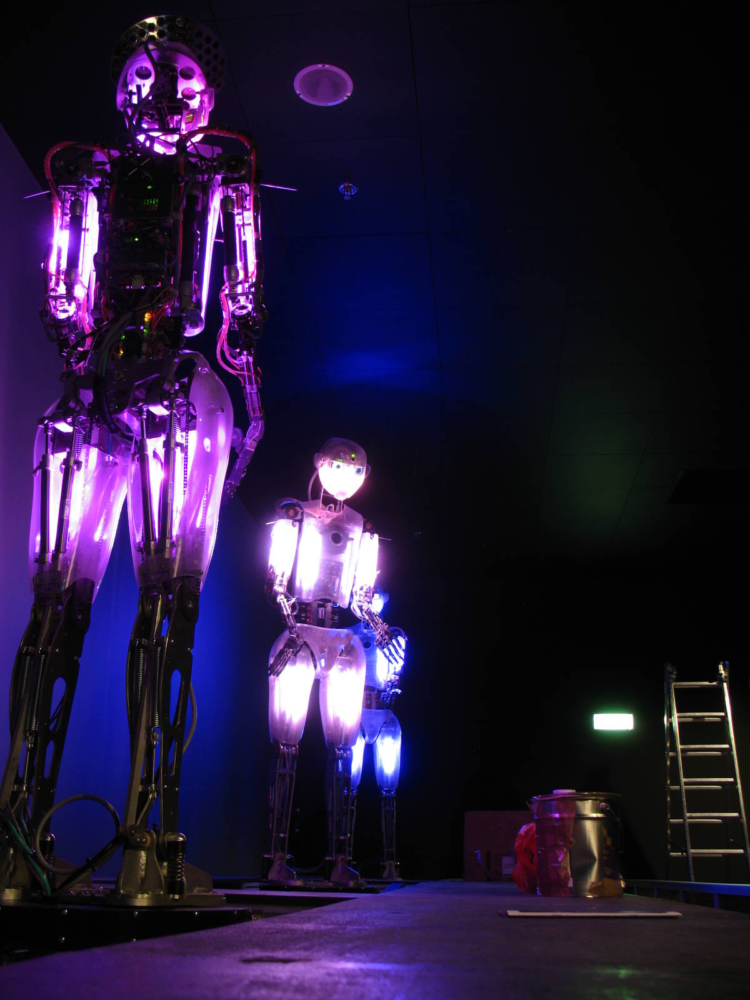
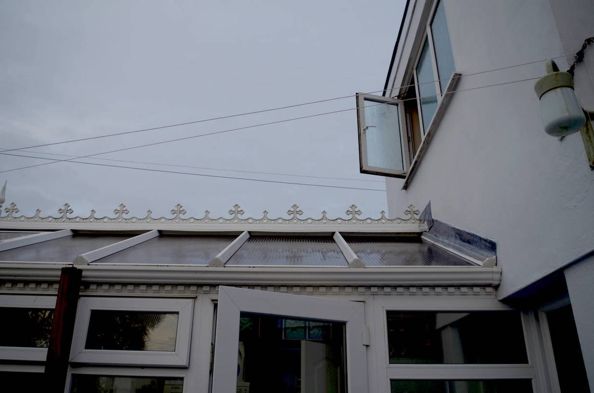
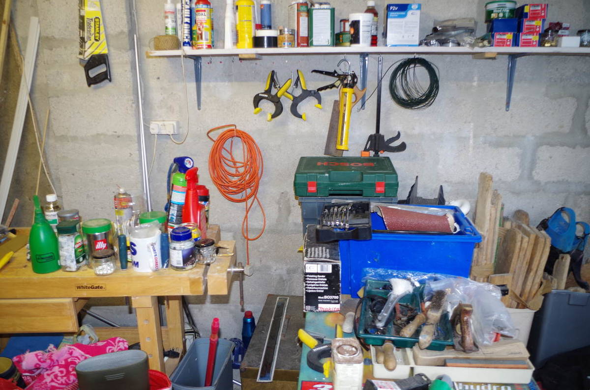
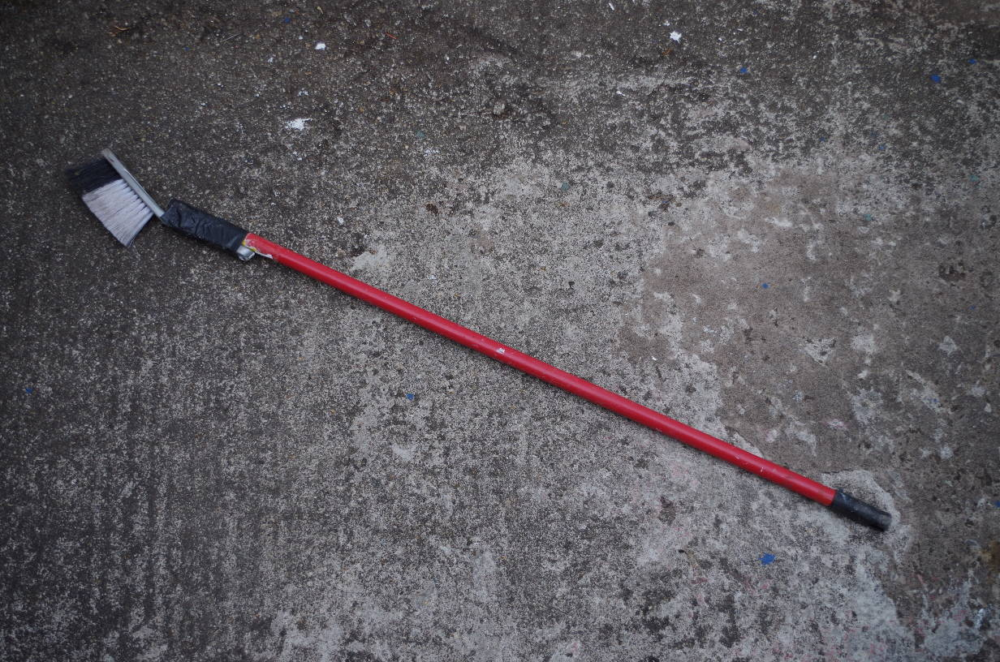
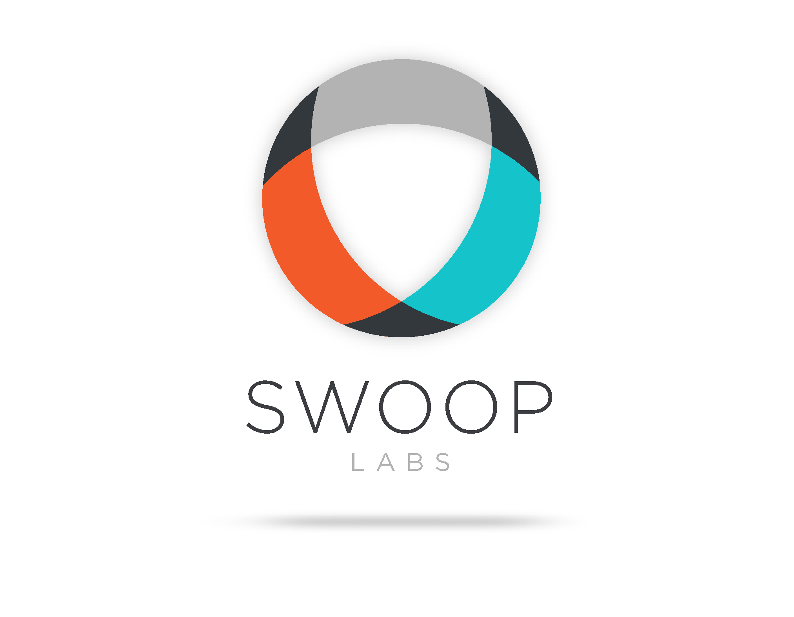

Double meaning!
Sorry to disappoint the 14 year old boys trapped in men's bodies, but not that kind of double meaning...
Glen Pike
- Lead Developer at Swoop - weareswoop.com
- Working for 17 years as a developer, 1 as a tester
- Still enjoying JavaScript
See what I say
- What "tools" are
- Things to create them
- My process
- Benefits
- Case Study
- Further ideas
Codemod
Codemod is a tool/library to assist you with large-scale codebase refactors that can be partially automated but still require human oversight and occasional intervention.
https://github.com/facebook/codemod
src/index.js:19
try {
await db.init(dbConfig);
app.listen(port, function() {
console.log(`Server started on port ${port}`);
})
} catch(e) {
- console.error('Caught error: ', e);
+ Log.error('Caught error: ', e);
process.exit();
}
}
main();
~
Accept change (y = yes [default], n = no, e = edit, A = yes to all, E = yes+edit)?
Chaos Monkey
Chaos Monkey is a service which identifies groups of systems and randomly terminates one of the systems in a group.
https://github.com/Netflix/SimianArmy/wiki/Chaos-Monkey
/**
* Run. This is run on the schedule set by the MonkeyScheduler
*/
public void run() {
if (ctx.calendar().isMonkeyTime(this)) {
LOGGER.info(this.type().name() + " Monkey Running ...");
try {
this.doMonkeyBusiness();
} finally {
String eventReport = context().getEventReport();
if (eventReport != null) {
LOGGER.info("Reporting what I did...\n" + eventReport);
}
}
} else {
LOGGER.info("Not Time for " + this.type().name() + " Monkey");
}
}
Others
- Clean up a database because of a weird bug in the code.
- Changing my environment from one state to another.
- Sync local DB / images with Wordpress remote
- Deploy audio and images to multiple machines
- Generating data for animation sequences based on other animations
- Remove need to be sudo for installing node packages globally

How you might create them
Approaches
- Shell alias
- Shell script
- Programming language script
- Makefile
- Combination of the above
Not exclusive - some tools combine languages - see later.
Approaches
- Challenge to learn new technique or language
- Test existing knowledge - without looking at doc's
- Speed - timebox / set a deadline
What is the one thing you're trying to do?
- Reduce RSI?
- Error prone operation?
- Slow operation - run in background?
- Creating, finding, updating removing data?
Has it been solved already?
- Search for existing solutions
- Can you build it with something you have?
- Know your toolbox
Balance between finding a solution and writing one -it's okay to reinvent the wheel
Break it down
- Write out the steps
- Stub out with debug, etc.
- Sort out your inputs
- Split into digestible chunks
This is ideal scenario - similar to how you code, but here you don't have to be formal with design, etc.
Flesh it out
- Outside in - start and end first?
- Fill in some gaps.
- Stub / dummy the dangerous stuff until everything else works
- Output a lot of information
- Get it working for one scenario
Start and end lets me know my setup and output is working
Tidy up
- Error handling / other scenarios
- Add / subtract / refactor code for repetition
- Clean up output - sensible level
- Test, test, test on non-production system
- Uninstall / fresh install and test again
Tidy up may be minimal if only you are using it, but always worth the effort
When to stop
- Solves your problem
- Just good enough
- Why? It's rough and ready code
- Learning will inform your next tool / other work
- You did test it though right?
We joke about the 80/80 rule right!
Testing
- Locally / non-essential scenario
- Testing appropriate to tool
- Can be manual, but should be repeatable
- Check your variable values are "sane" for "production"
- Get someone else to use it (if they have a need).
Don't assume because one bit works, it all does!
The Problem

Hard to reach areas. Fragile roof
Search for solutions

Can you see anything useful in this picture? Know your toolbox (this one is messy!)
The Nimbus 3000

What is the most important thing in this picture?
Duct Tape!
Your language of choice is the duct tape
Case Study: Robotic Theatre
Robotic Theatre Animations
- 3 animated robots + 3 lights + one sound source
- Animated via Blender 3D
- Animations broken into shorter chunks ~5m
- Some animations finished before others
- Need to trigger animations on each thing in sync from a master
- Making "master" animation was tedious and error prone
Robotic Theatre Breakdown
- Animations stored as SQL data
- Each chunk is determinate length
- Get animation lengths from each source
- Use longest one to keep them all in sync
- Create a "play" event with correct time
- Repeat for each chunk on each robot, etc.
Give walkthrough of script
Is it successful?
- You will know if it works
- Don't be afraid to tell others
- Or learn from it
Master sequence maker was used every day for aprox 8 weeks, then regularly afterwards.
Making the sequences manually took about 20 minutes for first setup, then 5 minutes tweaking if the animations were changed
(~4 times / day) then recording time - about 5-10 mins. Moving markers in Blender to trigger animations was not easy / accurate.
Script took about 2 days to write - 16 hours: paid for itself in 2 weeks.
Maintenance
- Can be expensive vs cost of problem
- Instead of refactor, can write a 2nd tool
- 3rd time - is becoming software...
Can be quicker for small tools, but as tools grow, refactor is important
Requires support
- Cross platform issues
- OS idiosyncracies
- Generally well accepted
- Superceded by other tools?
Shell fun - generally down to different default shell, need to consider alternatives. Time to support!
Good tools pay for themselves
- Time saving
- Less errors
- Can snowball into a bigger idea
- Can justify time-spent to bosses with proof
Robot script - 16 hours vs 40+
Biggest Benefit
- Experiment and learn
- New languages
- Deeper understanding
- Self improvement
- Opens your mind
- Lower stress (Unless Live DB involved!)
You are the tools!
Heh Heh Beavis
You are sharpening your own skills by doing this.
Think of it as "playtime" - we learn best through play
Ideas for tools
- Deployment / updating systems
- Scraping / getting information
- Transforming data
- Monitoring something
Summary
- What "tools" are
- How you might create them
- My process
- Benefits
- Keeping yourself sharp
- Further ideas
Finally
- I love writing tools
- Freedom to develop
- Focus and hack
- Small, easy to copy / combine
- Go and write your own
Stick tools in your bin dir and go. Some evolve.
Others were used as basis for "proper" stuff (a bit like my software :) )
Swoop are hiring
- JavaScript developer
- Front & Back-end
- Small but lively team
- Flexible working

/